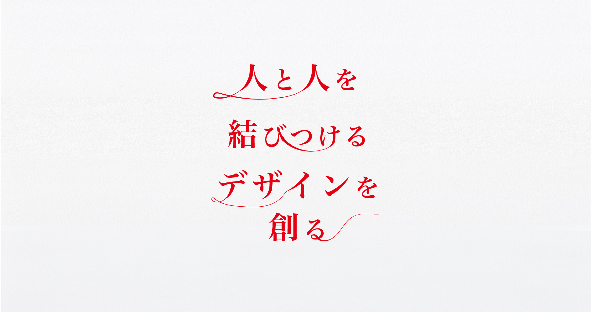
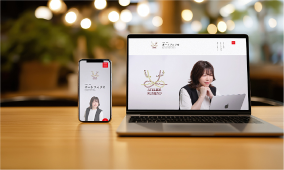
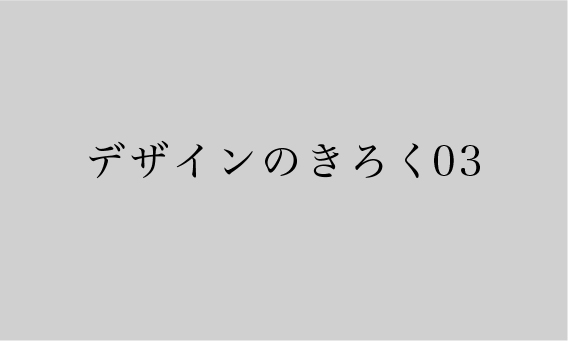
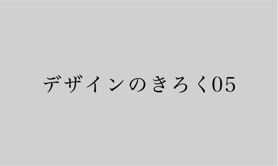
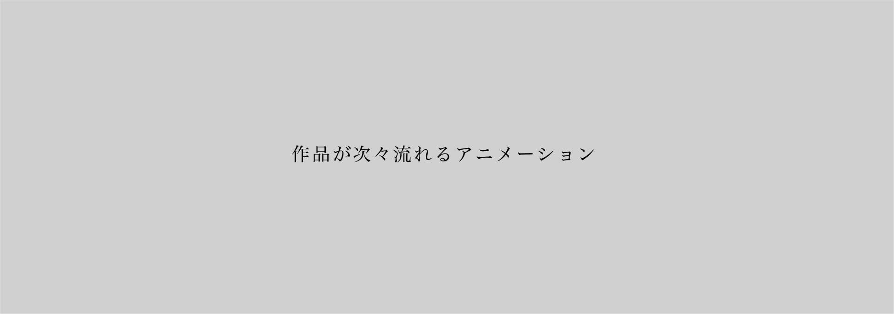

くめの ゆみ
ポートフォリオ
YUMI KUMENO'S PORTFOLIO
ウェブデザイン／グラフィックデザイン

#ウェブデザイン #ランディングページ
ランディングページは見やすく分かりやすくシンプルだけど洗練された雰囲気を演出しました
イラストレーター／フォトショップ／デザイン
より詳しく
#ウェブデザイン ＃ポートフォリオ
わたしが創りあげたデザイン・わたし自身をポートフォリオに詰め込みました
イラストレーター／フォトショップ／デザイン／コーディング
より詳しく


#ウェブデザイン #バナー
ポップなイメージ・高級感あるイメージといった幅広い表現もできます
イラストレーター／フォトショップ／デザイン
より詳しく
＃グラフィックデザイン ＃印刷物
ウェブデザインだけでなく印刷物も対応可能です
名刺は入稿まで行えます
イラストレーター／デザイン
より詳しく

すべてみる
現在はECサイトの運営・管理に携わる一方で、
Webデザイン制作を行っております。
デザインは一度きりのものではなく、人と人を常に少しづつ結びつけるきっかけになるものだと考えております。
小さなところに工夫と心を込めて丁寧に制作するスタイルで、長く愛されるデザインをご提案いたします。
くわしくみる
